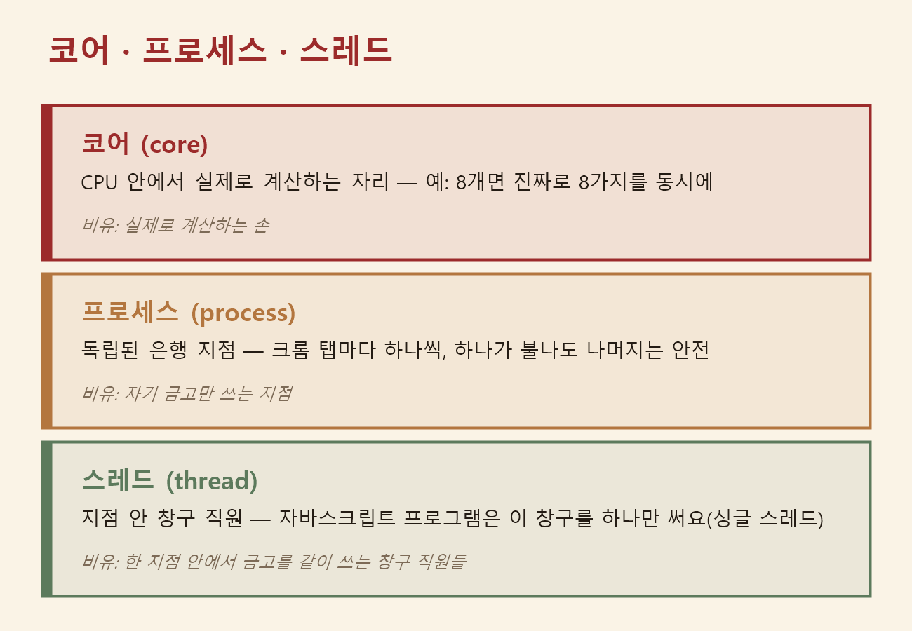

웹페이지를 이루는 세 겹 & 게임 만들기 (2) — 동기·비동기 차이와 프로세스·스레드·코어로 웹이 멈추지 않는 이유
2026. 7. 14.
지난 글에서 궁금증 하나를 답으로 못 채우고 남겨뒀어요. 구글 지도는 손가락으로 지도를 끌고 있는 그 순간에도, 어떻게 새 지도 조각을 뒤에서 계속 받아올 수 있는 걸까요? 유튜브는 영상을 재생하면서 어떻게 그 아래 댓글을 계속 불러올까요? 오늘은 그 답을 찾아봤는데, 답의 핵심은 "컴퓨터가 기다림을 다루는 방식"에 있었어요.
동기와 비동기 — 전화냐 문자냐
동기(synchronous)는 전화 통화예요. 상대가 받을 때까지 기다리고, 통화가 끝날 때까지 다른 일을 못 해요. 비동기(asynchronous)는 문자예요. 보내놓고 하던 일을 계속하다가, 답장이 오면 그때 확인해요.
카페에서 받는 진동벨이 딱 이 차이예요. 진동벨이 없으면 커피가 나올 때까지 카운터 앞에 서 있어야 하고(동기), 뒷사람 줄은 계속 길어져요. 진동벨을 받으면 자리로 가서 하던 일을 하다가 벨이 울릴 때 받으러 가면 돼요(비동기). 커피 만드는 시간 자체는 똑같아요. 달라지는 건 기다리는 동안 다른 일을 할 수 있느냐예요.
JavaScript는 왜 한 번에 한 가지만 할까
이 구분이 JavaScript에서 특히 중요한 이유가 있었어요. 웹페이지 안의 JavaScript는 기본적으로 일꾼이 한 명이에요 — 이걸 싱글 스레드(single thread)로 동작한다고 불러요. 그런데 일꾼이 한 명인데 동기 방식으로만 일한다면 어떻게 될까요? 버튼 클릭을 처리하는 코드가 서버 응답을 3초간 기다리며 서 있으면, 그 3초 동안 화면 전체가 멈춰버려요. 스크롤도 안 되고 다른 버튼도 안 눌리고, 재생되던 영상까지 멈춰요. 사이트에서 버튼 누른 뒤 화면이 통째로 굳어버린 경험이 있다면, 그 일부가 바로 이 문제였어요.
그래서 JavaScript는 오래 걸리는 일을 비동기로 처리해요. 서버에 데이터를 요청하거나(fetch), 시간을 재놓을 때(setTimeout), 요청만 걸어두고 곧바로 다음 일로 넘어가요. 무거운 일은 브라우저가 뒤에서 대신 처리하고, 끝나면 결과를 대기줄에 올려놔요. 한 명뿐인 일꾼은 지금 하던 일을 마친 뒤에 그 대기줄을 확인해서 결과를 처리하는데, 이 대기줄을 계속 돌리는 구조를 이벤트 루프(event loop)라고 불러요.
재밌게도 이 "페이지를 새로고침 안 하고 서버와 데이터를 주고받는" 핵심 부품은 원래 1990년대 말 마이크로소프트의 아웃룩 웹메일 팀이, 웹메일을 데스크톱 프로그램처럼 만들려고 개발한 거였대요. 열흘 만에 태어난 언어(지난 글의 JavaScript)와, 경쟁사가 전혀 다른 목적으로 만든 부품이 몇 년 뒤 구글 지도에서 만나 꽃을 피운 셈이에요. 그래서 AI가 만든 코드에서 async, await, setTimeout, .then(...) 같은 단어를 보면, "아, 여기는 기다리지 않고 걸어두는 부분이구나"라고 읽을 수 있으면 충분해요.
프로세스와 스레드 — 작업실과 그 안의 일꾼
그런데 브라우저는 어떻게 그 무거운 일을 "뒤에서 대신" 처리해줄까요? 여기서 한 층 더 내려가면 프로세스와 스레드가 나와요. 프로세스(process)는 실행 중인 프로그램 하나예요. 각자 독립된 작업실을 쓰고, 자기 메모리를 다른 프로세스가 넘볼 수 없어요. 스레드(thread)는 그 작업실 안에서 실제로 일하는 일꾼이에요. 한 작업실에 일꾼이 여러 명일 수 있고, 그 일꾼들은 작업실의 재료(메모리)를 같이 써요.
2008년 크롬이 나오기 전까지, 브라우저는 보통 프로그램 전체가 프로세스 하나였어요. 그러다 보니 탭 하나에서 문제가 생기면 브라우저 전체가 같이 죽었고, 쓰던 문서 열 개가 한꺼번에 사라지곤 했어요. 구글은 크롬에서 "탭마다 독립된 프로세스"라는 방식을 선택했고, 그 결과가 지금 제가 매일 보는 화면이에요 — 탭 하나가 "응답 없음"으로 죽어도 다른 탭들은 멀쩡해요. 한 작업실에 불이 나도 옆 작업실은 안전한 거죠. 작업 관리자(Windows)를 열어보면 크롬 항목이 수십 개 떠 있는데, 그게 탭·확장 프로그램마다 작업실이 따로라는 증거예요.
| 멀티스레딩 | 멀티프로세싱 | |
|---|---|---|
| 그림 | 한 작업실에 일꾼 여러 명 | 작업실 자체를 여러 개 |
| 메모리 | 같이 씁니다 | 각자 독립입니다 |
| 강점 | 가볍고, 재료를 바로 주고받습니다 | 하나가 죽어도 나머지는 안전합니다 |
| 약점 | 같은 재료를 동시에 건드리면 꼬입니다 | 무겁고, 작업실 사이 전달 비용이 듭니다 |
일꾼 두 명이 같은 장부에 동시에 숫자를 쓰면 기록이 꼬여요. JavaScript가 일꾼을 아예 한 명으로 정한 것도, 사실은 이 골치 아픈 문제를 애초에 피하려는 선택이었더라고요.
코어 — 결국 일손은 몇 개인가
코어(core)는 CPU 안에서 실제로 계산하는 물리적인 일손이에요. 코어가 8개면 진짜로 8가지 일을 동시에 할 수 있어요. 2000년대 초까지 CPU 경쟁은 "더 빠른 일손 한 명"을 만드는 경쟁이었는데, 속도를 올릴수록 발열과 전력 소모가 감당 안 되는 수준까지 커져버렸어요. 그래서 칩 회사들은 방향을 틀었어요 — 하나를 더 빠르게 못 만들면, 적당히 빠른 걸 여러 개 넣자. 그렇게 멀티코어 시대가 왔고, 2005년 무렵부터는 "프로그램이 가만히 있으면 저절로 빨라지던 시절은 끝났다"는 말이 나올 정도로, 여러 일손을 쓰도록 설계하는 게 당연한 일이 됐어요.
재밌는 건 컴퓨터 한 대에 코어는 몇 개 안 되는데 실제로 돌아가는 프로세스는 수백 개라는 거예요. 그 답은 운영체제가 아주 빠르게 번갈아 실행해주기 때문이에요 — 한 스레드를 잠깐 돌리고, 멈추고, 다음 스레드로. 이 전환이 워낙 빨라서 사람 눈에는 다 동시에 도는 것처럼 보여요. 혼자 여러 테이블을 도는 능숙한 홀 직원 같은 거예요. 참고로 이 "번갈아 쓰기" 방식은 1960년대에 이미 나왔던 아이디어인데, 그때 컴퓨터를 여러 사람이 나눠 쓰게 되면서 서로의 파일을 구분할 장치가 필요해졌고, 그렇게 태어난 게 지금 우리가 매일 입력하는 컴퓨터 비밀번호라고 해요.

🔍 직접 확인해봤어요 — Windows PowerShell에서 echo $env:NUMBER_OF_PROCESSORS를 치면 내 컴퓨터의 코어(논리 코어) 수가 숫자로 나와요. (macOS라면 터미널에 sysctl -n hw.ncpu를 쓰면 돼요.) 이 숫자와 작업 관리자에 떠 있는 프로세스 수를 비교해보니, 일손보다 일감이 훨씬 많은데도 화면이 안 멈추는 게 신기했어요 — 그게 바로 운영체제가 하는 일이었어요.
오늘의 개념이 지시하는 말을 바꾼다
정리하면 이렇게 이어져요. 코어는 물리적 일손이고, 운영체제는 그 일손을 프로세스와 스레드에 나눠주고, 브라우저는 탭마다 프로세스를 열어 그 안에서 여러 스레드로 일하고, 그중 JavaScript 일꾼은 한 명이라 오래 걸리는 일을 비동기로 걸어둬요. 구글 지도가 손가락을 따라오면서 데이터를 받는 것도, 영상을 보면서 댓글을 계속 불러오는 것도 전부 이 구조 위에서 일어나는 일이었어요.
이 개념은 코드를 쓰기 위한 게 아니라, AI에게 문제를 정확히 말하기 위한 것이더라고요. "게임이 가끔 버벅여요"라고 하면 AI가 원인을 추측해야 하지만, "목록 항목이 많아지면 화면이 뚝뚝 끊겨. 무거운 계산이 화면 갱신을 막는 것 같은데, 계산을 나누거나 뒤로 미룰 수 있어?"라고 하면 AI가 살펴볼 범위가 확 좁아져요.
이해를 확인해보려고 이런 문제를 스스로 풀어봤어요. 다음 중 비동기로 처리해야 할 일은 어느 쪽일까요?
A. 버튼을 눌렀을 때 점수를 1 올려 화면에 표시하기
B. 버튼을 눌렀을 때 서버에서 랭킹 목록을 받아와 표시하기
답은 B예요. A는 컴퓨터 안에서 즉시 끝나는 계산이라 기다림이 없지만, B는 네트워크를 왕복해야 해서 언제 끝날지 모르는 기다림이 있어요. 기다림이 있는 곳에만 비동기가 필요해요. A까지 비동기로 만들 필요는 없어요 — 비동기는 공짜가 아니라, 코드의 실행 순서를 읽기 어렵게 만드는 비용이 있기 때문이에요.
오늘 배운 동기·비동기 구분은, 결국 지난 글의 JavaScript가 "동작(무엇을 누르면 무엇이 바뀌는지)"을 맡는다는 이야기와 그대로 이어져요. 그 겹 안에서도 "즉시 바뀌는 것"과 "기다렸다가 바뀌는 것"이 나뉘어 있었던 거예요.
"웹페이지를 이루는 세 겹 & 게임 만들기" 시리즈
(2) 동기·비동기 차이와 프로세스·스레드·코어로 웹이 멈추지 않는 이유 (이 글)
※ 앞으로 이어질 교시는 발행되는 대로 이 목록에 추가할게요.